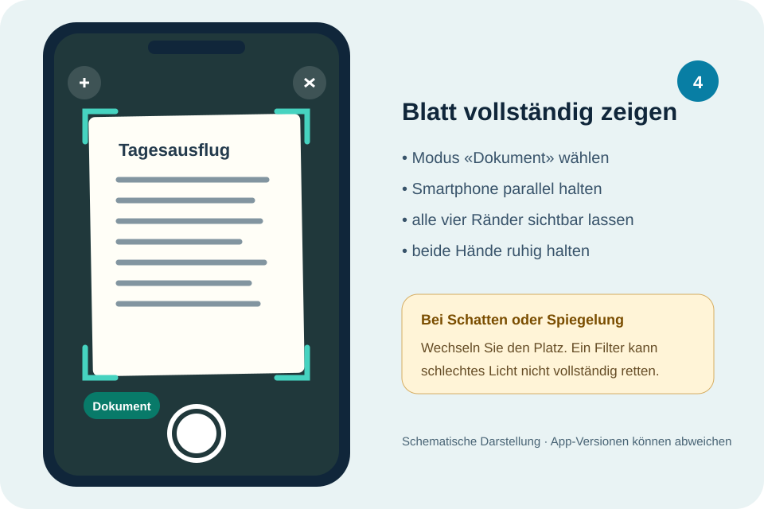

OneNote clever nutzen
0 von 10 Grundaufträgen erledigt
BFF Bern · GS1 · Schuljahr 2026/27
Diese Webseite ist Ihre Arbeitsgrundlage für den Informatikunterricht bei Herrn Marti. Hier finden Sie die Aufträge der aktuellen Woche, passende Hilfen und Ihren Arbeitsstand.
Ihr Arbeitsstand
Öffnen Sie einen Auftrag direkt. Die Farbe zeigt die Auftragsart, der Status steht jeweils rechts.
0 von 10 Grundaufträgen erledigt
0 von 5 Pflichtaufträgen erledigt
0 von 6 Pflichtaufträgen erledigt
Die Anzeige zeigt, wann der Pflichtteil abgeschlossen ist. Alle Themen und Aufträge bleiben jederzeit frei zugänglich.
Jetzt arbeiten
Wählen Sie die Unterrichtseinheit, an der Sie gerade arbeiten.
Schreiben, markieren, auswählen und den Stift für eigene Ideen nutzen.
Mit OneDrive lesbare PDFs erstellen, prüfen, benennen und weiterverwenden.
Häkchen und Notizen werden nach jeder Änderung in diesem Browser gespeichert. Ihr Auftragsstand wird zusätzlich für die Lehrpersonenübersicht synchronisiert; persönliche Notiztexte bleiben auf Ihrem Gerät.
Unterricht
Öffnen Sie eine Woche direkt. Frühere Wochen müssen nicht zuerst abgeschlossen sein.
Notizbuch einrichten und zentrale Werkzeuge anwenden · 0 von 12 Aufträgen erledigt.
DigiPen und Scannen mit OneDrive · 0 von 11 Pflichtaufträgen erledigt.
Notizbücher ordnen, Inhalte einfügen und wichtige Werkzeuge selbstständig anwenden.
Wechsel von der alten HTML-Datei
Sie haben schon in der alten OneNote-HTML-Datei gearbeitet? Übertragen Sie Häkchen, erledigte Aufträge und eigene Notizen in wenigen Schritten auf diese Webseite.
Stift, Marker, Radierer und Lasso ausprobieren und für eigene Pläne nutzen.
Papier sauber als PDF speichern, wiederfinden und am Notebook weiterverwenden.
Die Webseite speichert Häkchen und Notizen automatisch. PDF-Dateien bleiben in OneDrive.
Anleitung · OneDrive-App
Hier sehen Sie den ganzen Weg: vom richtigen Schulkonto bis zur kontrollierten PDF am Notebook. Arbeiten Sie die Schritte der Reihe nach durch.

Bevor Sie beginnen
Öffnen Sie auf dem Smartphone die OneDrive-App, nicht die normale Kamera-App.
Prüfen Sie beim Profilbild, ob Ihre BFF-Schul-E-Mail-Adresse aktiv ist.
Legen Sie Blatt und Smartphone bereit. Das Blatt enthält keine unnötigen persönlichen Angaben.
Wählen Sie «Beim Verwenden der App erlauben». Ohne diese Berechtigung kann OneDrive nicht scannen. Wenn Sie früher abgelehnt haben, öffnen Sie die Einstellungen des Smartphones → Apps → OneDrive → Berechtigungen → Kamera.
Schritt für Schritt
Tippen Sie ein Bild an, um es auf der Seite zu vergrössern.
Tippen Sie oben auf Ihr Profilbild. Wählen Sie das Konto der BFF Bern. Nur dann erscheint der Scan später im Schul-OneDrive am Notebook.
Weiter, wenn: Ihre Schul-E-Mail-Adresse sichtbar ist.
Öffnen Sie unten Dateien und danach Informatik → Scannen. Fehlt ein Ordner, wählen Sie + → Ordner und erstellen ihn.
Weiter, wenn: oben der Ordner «Scannen» geöffnet ist.
Tippen Sie auf das Kamerasymbol. Falls es nicht sichtbar ist: Tippen Sie auf + oder Hinzufügen und danach auf Scannen.
Weiter, wenn: Sie das Kamerabild in OneDrive sehen.
Wählen Sie Dokument. Halten Sie das Smartphone möglichst parallel über das Blatt. Lassen Sie rund um alle vier Ränder etwas Untergrund sichtbar und lösen Sie erst aus, wenn das Bild scharf ist.
Weiter, wenn: das ganze Blatt ohne Finger und Schatten sichtbar ist.
Ziehen Sie die vier Ecken genau an die Blattränder. Drehen Sie die Seite bei Bedarf. Verwenden Sie einen Filter nur, wenn kleine Schrift dadurch wirklich besser lesbar wird.
Mehrere Seiten? Tippen Sie vor dem Speichern auf + Seite, Hinzufügen oder das Blatt-mit-Plus-Symbol.
Fertigstellen
Tippen Sie auf Fertig. Geben Sie den verlangten Dateinamen ein, zum Beispiel EineSeite_Mia_Muster.pdf. Kontrollieren Sie den Speicherort OneDrive/Informatik/Scannen und wählen Sie Speichern.
Fertig, wenn: Sie die gespeicherte PDF nochmals geöffnet und die kleinste Schrift kontrolliert haben.
Nicht verwechseln
Wenn etwas nicht klappt
Öffnen Sie nur das Problem, das Sie gerade haben.
Das Foto ist noch keine sauber zugeschnittene PDF. Öffnen Sie OneDrive und starten Sie dort Scannen. Nehmen Sie das Blatt nochmals auf. So erhalten Sie Zuschnitt, Mehrseitenfunktion und PDF-Speicherung in einem Ablauf.
Freiwillige Videohilfe
Das deutschsprachige Video zeigt das Scanprinzip in OneDrive. Es stammt aus dem Jahr 2021; einzelne Schaltflächen können in Ihrer aktuellen App anders aussehen.
Externe Videohilfe von nteam GmbH auf YouTube. Das Video wird erst nach Ihrem Klick geladen.
Grundlage des Guides
Geprüft im September 2026. Die Anleitung folgt der aktuellen OneDrive-Scanlogik. Microsoft kann Bezeichnungen und Positionen in der App verändern.
Jetzt anwenden
Starten Sie bei Auftrag 1. Der Guide bleibt über die Hauptnavigation jederzeit erreichbar.
Gezielt wiederholen
Wählen Sie eine kurze Wiederholung. Die eigentlichen Workshopaufträge bleiben weiterhin frei erreichbar.
Stift, Textmarker, Radierer und Lasso nochmals gezielt einsetzen.
Zu Auftrag 2 →Eine handschriftliche Liste lesbar als PDF speichern.
Zu Auftrag 3 →Eine mehrseitige PDF erstellen und die Reihenfolge kontrollieren.
Zu Auftrag 4 →Ihre Arbeit
Sie sehen Ihren Arbeitsstand und können eine Sicherungsdatei erstellen. Der Auftragsstatus wird zusätzlich für die Lehrpersonenübersicht synchronisiert; persönliche Notiztexte bleiben lokal.
Ihre vollständigen Angaben bleiben in diesem Browser. In die Lehrpersonenübersicht gelangen nur Auftragsstatus und letzte Aktivität. Erstellen Sie zusätzlich eine Sicherungsdatei, wenn Sie das Gerät wechseln oder den Browser zurücksetzen.
Arbeitsstand übertragen
Öffnen Sie auf Ihrem Notebook die bisherige OneNote-Workshop-HTML-Datei – meist finden Sie sie im Ordner Dokumente. Öffnen Sie sie am besten im gleichen Browser wie bisher.
Dann ist Ihr Arbeitsstand noch vorhanden und kann exportiert werden.
Prüfen Sie, ob Sie wirklich dieselbe HTML-Datei am selben Speicherort und im gleichen Browser geöffnet haben. Der alte Arbeitsstand liegt im Browser, nicht direkt in der HTML-Datei. Wenn er dort weiterhin fehlt, melden Sie sich bei Herrn Marti.
Öffnen Sie in der alten HTML-Datei die Hilfe und sichern Sie Ihren Arbeitsstand.
Klickweg: Hilfe → Speichern → Fortschritt als Datei sichern.
Danach liegt im Ordner Downloads eine kleine Datei mit der Endung .json. Die HTML-Datei selbst müssen Sie nicht hochladen.
Dann verwenden Sie nicht irgendeine andere Datei. Lassen Sie die alte HTML-Datei geöffnet und melden Sie sich bei Herrn Marti, damit Ihr Stand nicht verloren geht.
Wählen Sie jetzt die eben gespeicherte .json-Datei. Wir prüfen zuerst, was darin enthalten ist. Erst danach wird etwas übernommen.
Vorhandene Angaben auf dieser Webseite bleiben erhalten.
Übertragung abgeschlossen
Sie können jetzt genau dort weiterarbeiten, wo Sie aufgehört haben.